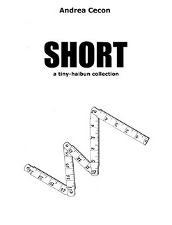

Patricia Prime
Auckland, New Zealand
A Review of Andrea Cecon's Short: A Tiny-Haibun Collection
Andrea Cecon, Short: A Tiny-haibun Collection with cover and illustrations by Marco Pilotto, Amazon Kindle Store, 2017, 31 pages.
Short is a collection of minimalist haibun by Andrea Cecon, with cover and illustrations by Marco Pilotto. The Preface is by Johannes S. H. Bjorg, in which he states:
“This minimal version of the form in some ways contrasts the traditional form in that the prose is rudimentary and sketchy and does leave room for the reader to meander along a writer’s intended path.”
The collection is divided into two sections: In Travel and Not in Travel. The first section begins with “From Zurich to Milan” and describes Switzerland as “essentially mountains and sky”. “Ukrainian Businesses” describes “brunch in Kiev”, while “Not Far from Home” expresses the joy in “this sunny spring day”, where the gloominess as they approach a village “brings me back to reality.”
The first haibun in the second section, “Not in Travel”, describes trying to see his niece on Skype. “Vegetarians” talks about a Chinese girl at a neighbouring table in a restaurant, and ends with this haiku:
vegan restaurant
my dog looks at me
suspiciously
“In Ecstasy” focuses on “Eating with your hands”, while “Pouring Hot Water” is about making tea. An airport bistro is the topic of the next haibun, where he communicates with a Russian guest at the arrivals.
Cecon’s minimalist haibun wonderfully capture not only the joys, but the frustrations of travel. In these poems there’s closeness, intensity and disappointment. The poems are alive, emotional and attentive to language and the rewarding demands of travel in foreign climes.
Also by Andrea Cecon are the collections Selected Haibuns (Amazon, 2013) and 15/15 – family haikai (Amazon, 2012).
|